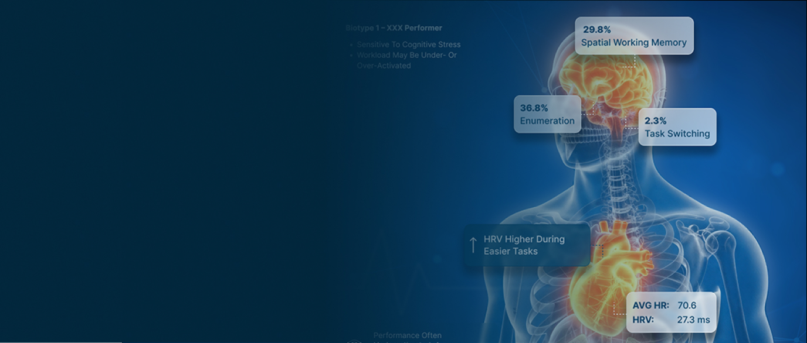
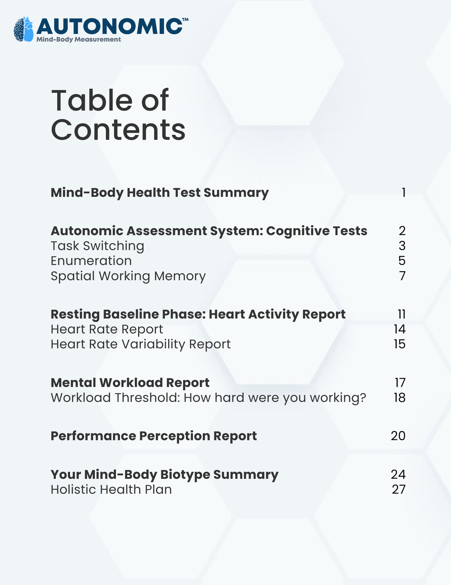

Mind & Body Insight
Autonomic™
A validated, science-backed platform that blends real-time physiological stress measurement with engaging cognitive tasks to provide clear, objective insight into human performance and well-being.
Get in TouchAbout the Technology
What is Autonomic™?
When we concentrate, make decisions, or sustain attention, the body responds automatically—adjusting heart rate, breathing, and nervous system activity. Autonomic™ measures these involuntary physiological responses to show how mental effort affects the body in real time.

EXAMPLE USES
Surveys capture perception; Autonomic™
measures physiological reality.
Employee Wellness & Human Resources
- Monitor and reduce burnout risk
- Measure the impact of wellness programs, workload changes, or policy shifts
- Drive engagement with objective, personalized insights
Wellness Clinics, Life/Exec Coaches, Sleep Clinics
- Assess how sleep, fatigue, and stress affect cognitive readiness
- Track improvement over time with objective metrics
- Support individualized care plans
Research, Innovation, Testing & Evaluation
- Quantitative human factors testing
- Evaluate technologies, workflows, or environments
- Validate interventions with objective outcomes
Coaches, Teams & Individuals
- Understand personal stress and recovery patterns
- Optimize performance and resilience
- Track progress over time
Getting Started
How Autonmic™ Works
One system. One reflex. Structured insights and real-time awareness
Structured Cognitive Assessment
Provoked. Controlled. Deep insight.
A customizable battery of cognitive tasks evokes mental effort across key domains such as attention, working memory, and task switching. Autonomic measures the body’s reflexive response to this effort and generates a comprehensive report characterizing performance, workload, and physiological strain—sensitive to factors like sleep, fatigue, and recovery.
Real-Time Monitoring
Continuous. Naturalistic. In the wild.
Autonomic™ continuously measures cognitive workload and stress as they unfold during real-world activities using a lightweight wearable ECG sensor—without surveys, interviews, or supervision. This enables real-time insight during presentations, training exercises, simulations, or user testing, revealing when, where, and how much mental strain emerges.
Used by the U.S. Army for technology evaluation, Autonomic™ quantifies how new technologies affect human cognitive workload so decision-makers can advance designs that improve performance without overloading the operator.
Read the Case StudyHow the U.S. Army Evaluated Human Impact of New Technologies
Autonomic™ was used by the U.S. Army to evaluate emerging vehicle technologies before further development—not just for performance, but for human cognitive burden.
Autonomic™ established each operator’s baseline cognitive profile and risk factors using a structured assessment. Then, during realistic simulations, it continuously measured real-time cognitive workload as soldiers interacted with new displays, AI tools, and controls.
The Result:
Objective evidence showing which technologies improved performance, which increased cognitive strain, and where designs could be individualized or redesigned—all documented in technical evaluation reports that informed go/no-go decisions.
This same approach applies anywhere humans interact with complex systems: vehicles, software, AI tools, training platforms, or operational workflows